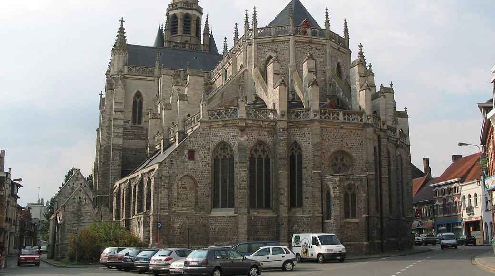
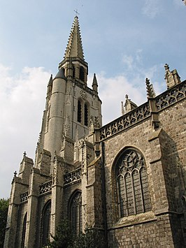
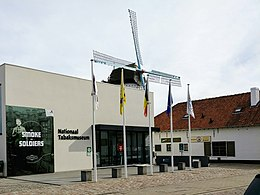

WERVIK

Feiten
1. Wervik is een stad in de Belgische provincie West-Vlaanderen.
2. Aan de overzijde van de Leie ligt de Franse gemeente Wervicq-Sud (Zuid-Wervik).
3. Na het Congres van Wenen in 1815 kwam de stad bij het Verenigd Koninkrijk der Nederlanden tot de Belgische Revolutie in 1830.
4. In 1830 werd Wervik een deel van België
5. Wervik is een van de oudste steden in België.
Sint-Medarduskerk
 Sint-Medarduskerk is een kerk in de Belgische stad Wervik. Deze kerk is een van de ruimste bedehuizen van West-Vlaanderen: 81 meter lang, 37 meter breed en een toren van 86 meter hoog. De kerk is genoemd naar de heilige Medardus van Noyon. Hij was de bisschop van Vermandois, en leefde in de 5de, 6de eeuw na Christus.De Tachtigjarige Oorlog zorgde ervoor dat de kerk in 1566 door de Geuzen geplunderd werd. De Malcontenten gebruikten de Sint-Medarduskerk in 1579 tijdelijk als verdedigingspunt. Tijdens gevechten brandde ze volledig uit.
Tabaksmuseum
 Nationaal Tabaksmuseum is een museum in de West-Vlaamse stad Wervik, gewijd aan de tabakscultuur. Aan de hand van honderden collectievoorwerpen wordt de wereld van de tabak geïllustreerd. De attributen van de roker, de geschiedenis van de tabaksreclame, de tabaksverpakking en de tabaksteelt in de Wervikse regio komen aan bod. Naast het museum bevindt zich de herberg "In den Grooten Moriaen".Vandaag blijven daar alleen het Pijp- en Tabaksmuseum in Sint-Niklaas en het Nationaal Tabaksmuseum in Wervik van over.